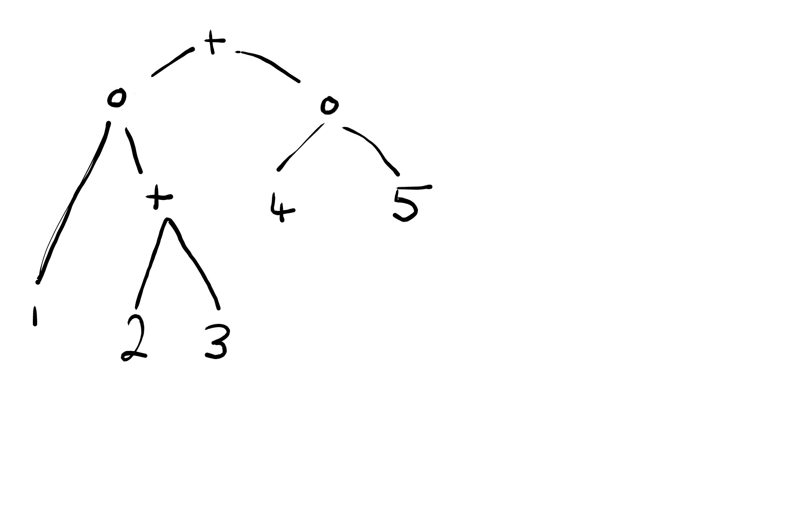

Last updated: 2019-09-12
Checks: 6 1
Knit directory: VEB-Boost/
This reproducible R Markdown analysis was created with workflowr (version 1.4.0). The Checks tab describes the reproducibility checks that were applied when the results were created. The Past versions tab lists the development history.
Great! Since the R Markdown file has been committed to the Git repository, you know the exact version of the code that produced these results.
The global environment had objects present when the code in the R Markdown file was run. These objects can affect the analysis in your R Markdown file in unknown ways. For reproduciblity it’s best to always run the code in an empty environment. Use wflow_publish or wflow_build to ensure that the code is always run in an empty environment.
The following objects were defined in the global environment when these results were created:
| Name | Class | Size |
|---|---|---|
| data | environment | 56 bytes |
| env | environment | 56 bytes |
The command set.seed(20190909) was run prior to running the code in the R Markdown file. Setting a seed ensures that any results that rely on randomness, e.g. subsampling or permutations, are reproducible.
Great job! Recording the operating system, R version, and package versions is critical for reproducibility.
Nice! There were no cached chunks for this analysis, so you can be confident that you successfully produced the results during this run.
Great job! Using relative paths to the files within your workflowr project makes it easier to run your code on other machines.
Great! You are using Git for version control. Tracking code development and connecting the code version to the results is critical for reproducibility. The version displayed above was the version of the Git repository at the time these results were generated.
Note that you need to be careful to ensure that all relevant files for the analysis have been committed to Git prior to generating the results (you can use wflow_publish or wflow_git_commit). workflowr only checks the R Markdown file, but you know if there are other scripts or data files that it depends on. Below is the status of the Git repository when the results were generated:
Untracked files:
Untracked: code/Objects/
Untracked: docs/figures/
Note that any generated files, e.g. HTML, png, CSS, etc., are not included in this status report because it is ok for generated content to have uncommitted changes.
These are the previous versions of the R Markdown and HTML files. If you’ve configured a remote Git repository (see ?wflow_git_remote), click on the hyperlinks in the table below to view them.
| File | Version | Author | Date | Message |
|---|---|---|---|---|
| Rmd | be67c07 | Andrew Goldstein | 2019-09-13 | Updating with some math |
The general idea of boosting is to combine many weak learners together to get a good learner. Typically, weak learners are combined together by fitting newer learners on the data, where we place higher weight on the data points that previous learners failed to fit accurately. We sequentially add these models together to create an additive model.
The idea behind VEB-Boosting (Variational Empirical Bayes-Boosting) is to combine base learners together in more complex ways. In particular, there are two general ways to combine learners: addition and (Schur) multiplication. Thus, we can define a learner recursively as:
A base learner;
A sum of two learners; or
A Schur product of two learners.
As a result, we can represent any learner as a binary tree, where each internal node is an operation combing the learners formed the child branches (\(+\) or \(\circ\)), and the terminal nodes represent base learners.
For example, consider the binary tree below: 
This tree represents the learner formed by the following: \[ \Big(\mu_1 \circ (\mu_2 + \mu_3)\Big) + (\mu_4 \circ \mu_5) \] (where \(\mu_j\) are our base learners).
By constructing our learner this way, we can construct more complex learners from our base learners than traditional boosting can.
We will see later that performing variational inference in the setting with a normally distributed response and unequal variances plays a key role.
For the weighted version of a regression, we have: \[ \begin{aligned} Y = \mu + E \\ \mu \sim g(\cdot) \\ E \sim \mathcal{N}(0, diag(\vec{\sigma^2})) \\ \text{Where } \quad \vec{\sigma^2} = [\sigma_1^2, \dots, \sigma_n^2]^T \end{aligned} \]
In this case, the ELBO can be written as \[ F(q, g, \vec{\sigma^2}; y) = -\frac{n}{2}\log(2\pi) - \frac{1}{2} \sum_{i=1}^n \log(\sigma_i^2) - \frac{1}{2}\mathbb{E}_q\Bigg[\Bigg\|\Big(y \circ \frac{1}{\vec{\sigma}}\Big) - \Big(\mu \circ \frac{1}{\vec{\sigma}}\Big)\Bigg\|_2^2\Bigg] + \mathbb{E}_q \Bigg[\log \frac{g(\mu)}{q(\mu)}\Bigg] \]
Then the form of the VB update is: \[ \begin{aligned} q(\mu = \mathbf{c}) \propto \exp\Bigg\{\log\Big(g(\mathbf{c})\Big) + \log\Big(p(Y|\mu = \mathbf{c}\Big)\Bigg\} = \\ \exp\Bigg\{\log\Big(g(\mathbf{c})\Big) - \frac{n}{2} \log(2\pi) - \frac{1}{2} \sum_{i=1}^n \log(\sigma_i^2) + \frac{1}{\sigma_i^2}\Big(Y_i - \mathbf{c}_i\Big)^2\Bigg\} \propto \\ \exp\Bigg\{\log\Big(g(\mathbf{c})\Big) - \frac{1}{2} \sum_{i=1}^n \frac{1}{\sigma_i^2}\Big(\mathbf{c}_i^2 - 2\mathbf{c}_iY_i\Big)\Bigg\} \end{aligned} \]
Let \(T(\mu_1, \dots, \mu_K)\) be the learner implied by a given tree structure \(T\) and base learners \(\mu_j\). Then the formal model for VEB-Boosting for the given tree and base learners is given by: \[ \begin{aligned} Y = T\Big(\mu_1, \dots, \mu_L\Big) + E \\ \mu_j \stackrel{\perp}{\sim} g_j(\cdot) \in \mathcal{G}_j, \quad j = 1, \dots, L \\ E \sim \mathcal{N}(0, \sigma^2 I_n) \\ \end{aligned} \]
To fit this model, we use variational inference with a mean-field approximation \(\mathcal{Q}\): \[ q\Big(\mu_1, \dots, \mu_L\Big) = \prod_{j=1}^L q_j\Big(\mu_j\Big) \]
For any given base learner \(\mu_j\) in the tree \(T(\mu_1, \dots, \mu_K)\), we can define the tree as a sequence of operations involving our base learner \(\mu_j\) and learners \(\nu_s\).
In order to achieve this, let the position of any node in the tree be given by a string of L’s and R’s, where “L” signifies going left in the tree and “R” signifies going right, and the string “\(\cdot\)” corresponds to the root node. At a given string position \(s\) for an internal node, let the operator at that position be given by \(\oplus_s\), and let the learner that’s described by the subtree whose root is the given internal node be given by \(\nu_s\). And say a string \(s\) is given by the sequence \(s = d_1 \cdots d_K\), where each \(d_k \in \{L, R\}\). Then define \(\bar{d_k}\) as switching the direction.
For example, the position of \(\mu_2\) in the example tree above is \(s = LRL\). Then we can describe the tree as: \[ \nu_R + \Big[\nu_{LL} \circ \Big(\mu_2 + \nu_{LRR}\Big)\Big] \]
In general, for a base learner at a terminal node at position \(s = d_1 \cdots d_K\), we can describe the tree as: \[ \nu_{\bar{d_1}} \oplus_\cdot \Bigg(\nu_{d_1 \bar{d_2}} \oplus_{d_1} \Big(\nu_{d_1 d_2 \bar{d_3}} \oplus_{d_2} \cdots (\mu_j \oplus_{d_1 d_2 \cdots d_{k-1}} \nu_{d_1 d_2 \cdots d_{k-1} \bar{d_k}}) \cdots\Big)\Bigg) \]
In words, we halve the tree at each step, combining the half that doesn’t include \(\mu_j\) into a single learner and repeat until we get to \(\mu_j\).
To solve the VEB problem, \(\arg \max_{q \in \mathcal{Q}, g \in \mathcal{G}, \theta \in \Theta} F(q, g, \sigma^2;y)\), we can perform coordinate ascent updates, where we update each \((q_l, g_l)\) individually, and then update \(\sigma^2\).
Under this model, we can write the ELBO as \[ F(q, g, \sigma^2;y) = \mathbb{E}_q\Bigg[\log p(y|\mu, \sigma^2)\Bigg] + \sum_{l=1}^L \mathbb{E}_{q_l} \Bigg[\log \frac{g_l(\mu_l)}{q_l(\mu_l)}\Bigg] = \\ \mathbb{E}_q\Bigg[-\frac{n}{2} \log(2\pi) - \frac{1}{2} \sum_{i=1}^n \log(\sigma^2) - \frac{1}{2} \Bigg\|\Big(Y \circ \frac{1}{\vec{\sigma}}\Big) - \Big(T(\mu) \circ \frac{1}{\vec{\sigma}}\Big)\Bigg\|_2^2\Bigg] + \sum_{l=1}^L \mathbb{E}_{q_l} \Bigg[\log \frac{g_l(\mu_l)}{q_l(\mu_l)}\Bigg] \]
In terms of a specific \(\mu_j\) in position \(s = d_1 \cdots d_K\) (and the corresponding \(q_j\) and \(g_j\)), we can write the ELBO as \[ \mathbb{E}_{q_l} \Bigg[-\frac{n}{2} \log(2\pi) - \frac{1}{2} \sum_{i=1}^n \log(\sigma^2) - \frac{1}{2} \mathbb{E}_{q_{-l}} \Big[\Big\|\Big(Y \circ \frac{1}{\vec{\sigma}}\Big) - \Big(T(\mu) \circ \frac{1}{\vec{\sigma}}\Big)\Big\|_2^2\Big]\Bigg] + \sum_{l=1}^L \mathbb{E}_{q_l} \Bigg[\log \frac{g_l(\mu_l)}{q_l(\mu_l)}\Bigg] = \\ \mathbb{E}_{q_j}\Bigg[-\frac{1}{2} \mathbb{E}_{q_{-j}}\Big[\Big\|\Big(Y \circ \frac{1}{\vec{\sigma}}\Big) - \Big(T(\mu) \circ \frac{1}{\vec{\sigma}}\Big)\Big\|_2^2\Big]\Bigg] + \mathbb{E}_{q_j} \Bigg[\log \frac{g_j(\mu_j)}{q_j(\mu_j)}\Bigg] + (const \; in \; \mu_j,q_j, g_j) = \\ \mathbb{E}_{q_j}\Bigg[-\frac{1}{2} \mathbb{E}_{q_{-j}}\Big[\Big\|\Big(Y \circ \frac{1}{\vec{\sigma}}\Big) - \Big(\nu_{\bar{d_1}} \oplus_\cdot \Bigg(\nu_{d_1 \bar{d_2}} \oplus_{d_1} \Big(\nu_{d_1 d_2 \bar{d_3}} \oplus_{d_2} \cdots (\mu_j \oplus_{d_1 d_2 \cdots d_{k-1}} \nu_{d_1 d_2 \cdots d_{k-1} \bar{d_k}}) \cdots\Big)\Bigg) \circ \frac{1}{\vec{\sigma}}\Big)\Big\|_2^2\Big]\Bigg] + \mathbb{E}_{q_j} \Bigg[\log \frac{g_j(\mu_j)}{q_j(\mu_j)}\Bigg] + (const \; in \; \mu_j,q_j, g_j) \]
For a given operator \(\oplus\), and implied distribution over \(\nu_2\) (with first moment \(\bar{\nu_2}\) and second moment \(\bar{\nu_2^2}\)), define \[ \nu_1 \bar{\oplus} \nu_2 := \begin{cases} \nu_1 - \bar{\nu_2}, \quad \text{if } \oplus = + \\ \nu_1 \circ \frac{\bar{\nu_2}}{\bar{\nu_2^2}}, \quad \text{if } \oplus = \circ \end{cases} \]
Next, define \[ \tilde{Y} := \Bigg(\cdots \Big( (Y \bar{\oplus}_\cdot \nu_{\bar{d_1}}) \bar{\oplus}_{d_1} \nu_{d_1 \bar{d_2}}\Big) \bar{\oplus}_{d_1d_2} \cdots \bar{\oplus}_{d_1 \cdots d_{K-1}} \nu_{d_1 \cdots d_{k-1}\bar{d_K}}\Bigg) \] and define \[ \vec{Q^2} := \circ_s \bar{\nu_{sd}^2} \] where \(s\) runs over all partials string of \(d_1 \cdots d_{K-1}\) such that \(\oplus_s = \circ\) and \(d\) follows \(s\) in \(d_1 \cdots d_{K}\).
With these definitions in place, we make the following claim: \[ \mathbb{E}_{q_j}\Bigg[-\frac{1}{2} \mathbb{E}_{q_{-j}}\Big[\Big\|\Big(Y \circ \frac{1}{\vec{\sigma}}\Big) - \Big(\nu_{\bar{d_1}} \oplus_\cdot \Bigg(\nu_{d_1 \bar{d_2}} \oplus_{d_1} \Big(\nu_{d_1 d_2 \bar{d_3}} \oplus_{d_2} \cdots (\mu_j \oplus_{d_1 d_2 \cdots d_{k-1}} \nu_{d_1 d_2 \cdots d_{k-1} \bar{d_k}}) \cdots\Big)\Bigg) \circ \frac{1}{\vec{\sigma}}\Big)\Big\|_2^2\Big]\Bigg] + \mathbb{E}_{q_j} \Bigg[\log \frac{g_j(\mu_j)}{q_j(\mu_j)}\Bigg] + (const \; in \; \mu_j,q_j, g_j) = \\ \mathbb{E}_{q_j} \Bigg[-\frac{1}{2} \Bigg\|\Big(\tilde{Y} \circ \vec{\frac{Q}{\sigma}}\Big) - \Big(\mu_j \circ \vec{\frac{Q}{\sigma}}\Big)\Bigg\|_2^2\Bigg] + \mathbb{E}_{q_j} \Bigg[\log \frac{g_j(\mu_j)}{q_j(\mu_j)}\Bigg] + (const \; in \; \mu_j,q_j, g_j) \]
We prove this claim by induction over \(K\), the length of the string defining the position of \(\mu_j\) in the tree.
Base case: \(K = 1\) In this case, the ELBO is \[ \mathbb{E}_{q_j} \Bigg[-\frac{1}{2} \mathbb{E}_{q_{-j}} \Big[\Big\|\Big(Y \circ \frac{1}{\vec{\sigma}}\Big) - \Big((\mu_j \oplus_\cdot \nu_{\bar{d_1}}) \circ \frac{1}{\vec{\sigma}}\Big)\Big\|_2^2\Big]\Bigg] + \mathbb{E}_{q_j} \Bigg[\log \frac{g_j(\mu_j)}{q_j(\mu_j)}\Bigg] + (const \; in \; \mu_j,q_j, g_j) \]
\(\oplus_\cdot = +\) \[ \begin{aligned} \mathbb{E}_{q_j} \Bigg[-\frac{1}{2} \mathbb{E}_{q_{-j}} \Big[\Big\|\Big(Y \circ \frac{1}{\vec{\sigma}}\Big) - \Big((\mu_j + \nu_{\bar{d_1}}) \circ \frac{1}{\vec{\sigma}}\Big)\Big\|_2^2\Big]\Bigg] = \mathbb{E}_{q_j} \Bigg[-\frac{1}{2} \mathbb{E}_{q_{-j}} \Big[\Big\|\Big((Y - \nu_{\bar{d_1}}) \circ \frac{1}{\vec{\sigma}}\Big) - \Big(\mu_j \circ \frac{1}{\vec{\sigma}}\Big)\Big\|_2^2\Big]\Bigg] = \\ \mathbb{E}_{q_j} \Bigg[-\frac{1}{2} \Bigg(\mathbb{E}_{q_{-j}} \Big[\Big\|(Y - \nu_{\bar{d_1}}) \circ \frac{1}{\vec{\sigma}}\Big\|_2^2\Big] - 2\Big((Y - \bar{\nu}_{\bar{d_1}}) \circ \frac{1}{\vec{\sigma}}\Big)^T\Big(\mu_j \circ \frac{1}{\vec{\sigma}}\Big) + \Big\|\mu_j \circ \frac{1}{\vec{\sigma}}\Big\|_2^2\Bigg)\Bigg] = \\ \mathbb{E}_{q_j} \Bigg[-\frac{1}{2} \Big\|\Big(Y - \bar{\nu}_{\bar{d_1}}\Big) \circ \frac{1}{\vec{\sigma}} - \mu_j \circ \frac{1}{\vec{\sigma}} \Big\|_2^2\Bigg] + (const \; in \; \mu_j,q_j, g_j) \end{aligned} \]
\(\oplus_\cdot = \circ\) \[ \begin{aligned} \mathbb{E}_{q_j} \Bigg[-\frac{1}{2} \mathbb{E}_{q_{-j}} \Big[\Big\|\Big(Y \circ \frac{1}{\vec{\sigma}}\Big) - \Big((\mu_j \circ \nu_{\bar{d_1}}) \circ \frac{1}{\vec{\sigma}}\Big)\Big\|_2^2\Big]\Bigg] = \mathbb{E}_{q_j} \Bigg[-\frac{1}{2} \Bigg(-2\Big(Y \circ \frac{1}{\vec{\sigma}}\Big)^T \Big(\mu_j \circ \bar{\nu}_{\bar{d_1}} \circ \frac{1}{\vec{\sigma}}\Big) + \Big\|\mu_j \circ \sqrt{\bar{\nu^2}_{\bar{d_1}}} \circ \frac{1}{\vec{\sigma}}\Big\|_2^2\Bigg)\Bigg] + (const \; in \; \mu_j,q_j, g_j) = \\ \mathbb{E}_{q_j} \Bigg[-\frac{1}{2} \Bigg\|\Big(Y \circ \frac{\bar{\nu}_{\bar{d_1}}}{\bar{\nu^2}_{\bar{d_1}}}\Big) \circ \frac{\sqrt{\bar{\nu^2}_{\bar{d_1}}}}{\vec{\sigma}} - \mu_j\circ \frac{\sqrt{\bar{\nu^2}_{\bar{d_1}}}}{\vec{\sigma}}\Bigg\|_2^2\Bigg] + (const \; in \; \mu_j,q_j, g_j) \end{aligned} \]
In both cases, the ELBO has the desired form.
Inductive Step: Assume true for \(K-1\) In this case, the ELBO is \[ \mathbb{E}_{q_j}\Bigg[-\frac{1}{2} \mathbb{E}_{q_{-j}}\Big[\Big\|\Big(Y \circ \frac{1}{\vec{\sigma}}\Big) - \Big(\nu_{\bar{d_1}} \oplus_\cdot \Bigg(\nu_{d_1 \bar{d_2}} \oplus_{d_1} \Big(\nu_{d_1 d_2 \bar{d_3}} \oplus_{d_2} \cdots (\mu_j \oplus_{d_1 d_2 \cdots d_{k-1}} \nu_{d_1 d_2 \cdots d_{k-1} \bar{d_k}}) \cdots\Big)\Bigg) \circ \frac{1}{\vec{\sigma}}\Big)\Big\|_2^2\Big]\Bigg] + \mathbb{E}_{q_j} \Bigg[\log \frac{g_j(\mu_j)}{q_j(\mu_j)}\Bigg] + (const \; in \; \mu_j,q_j, g_j) \] Define \[ \nu_{d_1} := \Bigg(\nu_{d_1 \bar{d_2}} \oplus_{d_1} \Big(\nu_{d_1 d_2 \bar{d_3}} \oplus_{d_2} \cdots (\mu_j \oplus_{d_1 d_2 \cdots d_{k-1}} \nu_{d_1 d_2 \cdots d_{k-1} \bar{d_k}}) \cdots\Big)\Bigg) \]
So we can write the ELBO more compactly as \[ \mathbb{E}_{q_j}\Bigg[-\frac{1}{2} \mathbb{E}_{q_{-j}}\Big[\Big\|\Big(Y \circ \frac{1}{\vec{\sigma}}\Big) - \Big(\nu_{\bar{d_1}} \oplus_\cdot \nu_{d_1} \circ \frac{1}{\vec{\sigma}}\Big)\Big\|_2^2\Big]\Bigg] + \mathbb{E}_{q_j} \Bigg[\log \frac{g_j(\mu_j)}{q_j(\mu_j)}\Bigg] + (const \; in \; \mu_j,q_j, g_j) \]
\(\oplus_\cdot = +\) \[ \begin{aligned} \mathbb{E}_{q_j}\Bigg[-\frac{1}{2} \mathbb{E}_{q_{-j}}\Big[\Big\|\Big(Y \circ \frac{1}{\vec{\sigma}}\Big) - \Big(\nu_{\bar{d_1}} + \nu_{d_1} \circ \frac{1}{\vec{\sigma}}\Big)\Big\|_2^2\Big]\Bigg] = \mathbb{E}_{q_j}\Bigg[-\frac{1}{2} \mathbb{E}_{q_{-j}}\Big[\Big\|\Big((Y - \nu_{\bar{d_1}} ) \circ \frac{1}{\vec{\sigma}}\Big) - \Big(\nu_{d_1} \circ \frac{1}{\vec{\sigma}}\Big)\Big\|_2^2\Big]\Bigg] = \\ [\text{Split expectation over} -j] = \\ \mathbb{E}_{q_j}\Bigg[-\frac{1}{2} \mathbb{E}_{d_1} \mathbb{E}_{\bar{d_1}}\Big[\Big\|\Big((Y - \nu_{\bar{d_1}} ) \circ \frac{1}{\vec{\sigma}}\Big) - \Big(\nu_{d_1} \circ \frac{1}{\vec{\sigma}}\Big)\Big\|_2^2\Big]\Bigg] = \mathbb{E}_{q_j}\Bigg[-\frac{1}{2} \mathbb{E}_{d_1} \Big[-2\Big((Y - \bar{\nu}_{\bar{d_1}}) \circ \frac{1}{\vec{\sigma}}\Big)^T\Big(\nu_{d_1} \circ \frac{1}{\vec{\sigma}}\Big) + \Big\|\nu_{d_1} \circ \frac{1}{\vec{\sigma}}\Big\|_2^2\Big]\Bigg] + (const \; in \; \mu_j,q_j, g_j) = \\ \mathbb{E}_{q_j}\Bigg[-\frac{1}{2} \mathbb{E}_{d_1} \Big[\Big\|\Big((Y - \bar{\nu}_{\bar{d_1}}) \circ \frac{1}{\vec{\sigma}}\Big) - \Big(\nu_{d_1} \circ \frac{1}{\vec{\sigma}}\Big)\Big\|_2^2\Big]\Bigg] + (const \; in \; \mu_j,q_j, g_j) = \\ [\text{Inductive step, with response } Y - \bar{\nu}_{\bar{d_1}}] = \\ \mathbb{E}_{q_j} \Bigg[-\frac{1}{2} \Bigg\|\Big(\tilde{Y} \circ \vec{\frac{Q}{\sigma}}\Big) - \Big(\mu_j \circ \vec{\frac{Q}{\sigma}}\Big)\Bigg\|_2^2\Bigg] + (const \; in \; \mu_j,q_j, g_j) \end{aligned} \]
\(\oplus_{d_1 \cdots d_{K-1}} = \circ\) \[ \begin{aligned} \mathbb{E}_{q_j}\Bigg[-\frac{1}{2} \mathbb{E}_{q_{-j}}\Big[\Big\|\Big(Y \circ \frac{1}{\vec{\sigma}}\Big) - \Big(\nu_{\bar{d_1}} \circ \nu_{d_1} \circ \frac{1}{\vec{\sigma}}\Big)\Big\|_2^2\Big]\Bigg] = \mathbb{E}_{q_j}\Bigg[-\frac{1}{2} \mathbb{E}_{q_{-j}}\Big[-2\Big(Y \circ \nu_{\bar{d_1}} \circ \frac{1}{\vec{\sigma}}\Big)^T \Big(\nu_{d_1} \circ \frac{1}{\vec{\sigma}}\Big) + \Big\|\nu_{\bar{d_1}} \circ \nu_{d_1} \circ \frac{1}{\vec{\sigma}}\Big\|_2^2\Big]\Bigg] + (const \; in \; \mu_j,q_j, g_j) = \\ [\text{Split expectation over} -j] = \\ \mathbb{E}_{q_j}\Bigg[-\frac{1}{2} \mathbb{E}_{d_1}\Big[-2\Big(Y \circ \bar{\nu}_{\bar{d_1}} \circ \frac{1}{\vec{\sigma}}\Big)^T \Big(\nu_{d_1} \circ \frac{1}{\vec{\sigma}}\Big) + \Big\|\sqrt{\bar{\nu^2}_{\bar{d_1}}} \circ \nu_{d_1} \circ \frac{1}{\vec{\sigma}}\Big\|_2^2\Big]\Bigg] + (const \; in \; \mu_j,q_j, g_j) = \\ \mathbb{E}_{q_j} \Bigg[-\frac{1}{2} \mathbb{E}_{d_1} \Big[\Big\|\Big(Y \circ \frac{\bar{\nu}_{\bar{d_1}}}{\bar{\nu^2}_{\bar{d_1}}} \circ \frac{\sqrt{\bar{\nu^2}_{\bar{d_1}}}}{\vec{\sigma}}\Big) - \Big(\nu_{d_1} \circ \frac{\sqrt{\bar{\nu^2}_{\bar{d_1}}}}{\vec{\sigma}}\Big)\Big\|_2^2\Big]\Bigg] + (const \; in \; \mu_j,q_j, g_j) = \\ = \\ [\text{Inductive Step, with response } Y \circ \frac{\bar{\nu}_{\bar{d_1}}}{\bar{\nu^2}_{\bar{d_1}}} \circ \frac{\sqrt{\bar{\nu^2}_{\bar{d_1}}}}{\vec{\sigma}} \text{and variances } \frac{\bar{\nu^2}_{\bar{d_1}}}{\vec{\sigma}}] = \\ \mathbb{E}_{q_j} \Bigg[-\frac{1}{2} \Bigg\|\Big(\tilde{Y} \circ \vec{\frac{Q}{\sigma}}\Big) - \Big(\mu_j \circ \vec{\frac{Q}{\sigma}}\Big)\Bigg\|_2^2\Bigg] + (const \; in \; \mu_j,q_j, g_j) \end{aligned} \]
Thus, the claim has been shown.
As a consequence, the claim shows that we can update each \((q_j, g_j)\) by finding the VEB solution to the weighted regression problem. All we need are the first 2 moments from all other base learners, as well as the tree structure in order to reconstruct how the other learners are related to \(\mu_j\).
sessionInfo()R version 3.6.1 (2019-07-05)
Platform: x86_64-w64-mingw32/x64 (64-bit)
Running under: Windows 10 x64 (build 18362)
Matrix products: default
locale:
[1] LC_COLLATE=English_United States.1252
[2] LC_CTYPE=English_United States.1252
[3] LC_MONETARY=English_United States.1252
[4] LC_NUMERIC=C
[5] LC_TIME=English_United States.1252
attached base packages:
[1] stats graphics grDevices utils datasets methods base
loaded via a namespace (and not attached):
[1] workflowr_1.4.0 Rcpp_1.0.1 digest_0.6.20 rprojroot_1.3-2
[5] backports_1.1.4 git2r_0.26.1 magrittr_1.5 evaluate_0.14
[9] highr_0.8 stringi_1.4.3 fs_1.3.1 whisker_0.3-2
[13] rmarkdown_1.14 tools_3.6.1 stringr_1.4.0 glue_1.3.1
[17] xfun_0.8 yaml_2.2.0 compiler_3.6.1 htmltools_0.3.6
[21] knitr_1.23